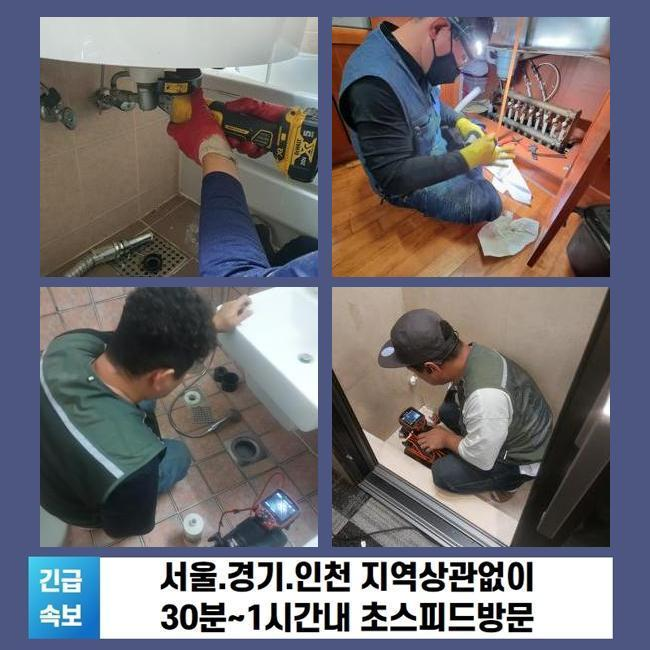
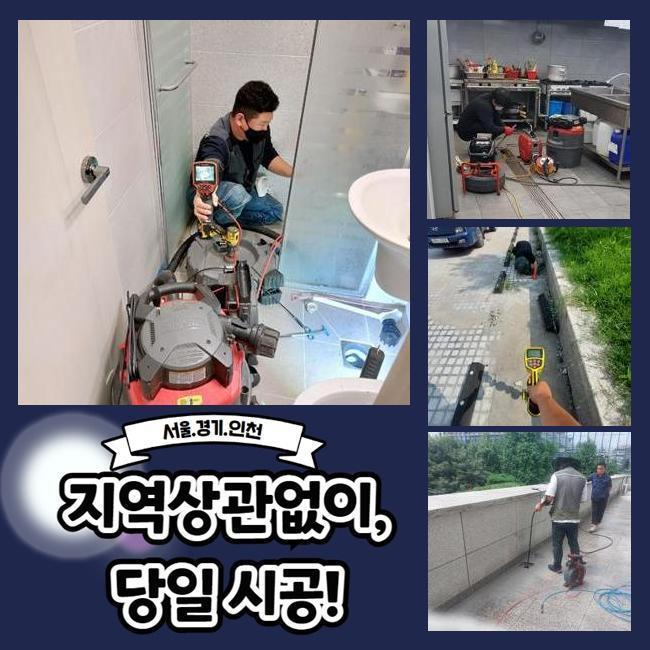
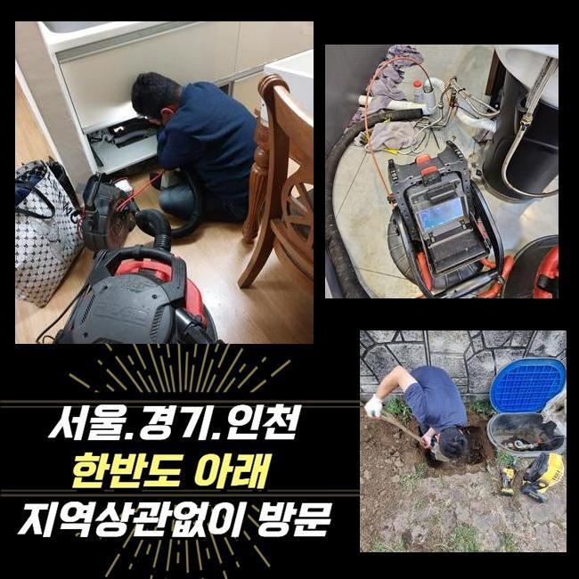
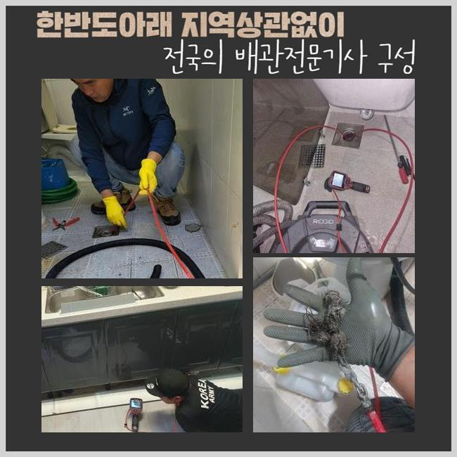
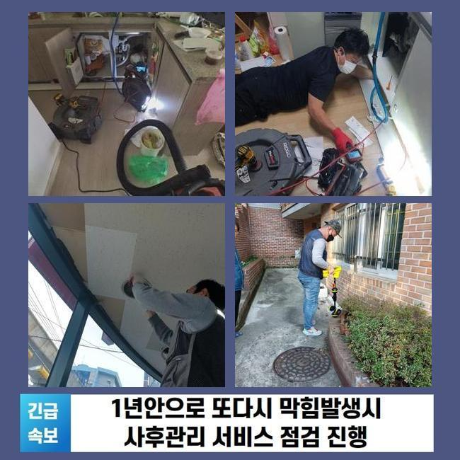
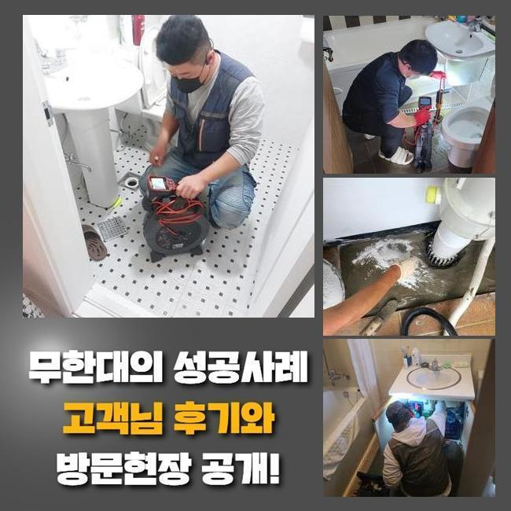

🏠 안산 성포동하수도막힘 사이동 하수구뚫어주는업체 설비출장
안산 싱크대막힘 전문 시공 후기

📋 작업 개요
- 위치: 안산
- 서비스 유형: 싱크대막힘, 하수구막힘, 배관막힘, 역류해결, 뚫는업체, 배관청소
- 작업 일시: 2025. 1. 17. 16:36
- 업체명: 하수구수사대 (010-5615-2118)
🔍 문제 상황
안산 성포동하수도막힘 사이동 하수구뚫어주는업체 설비출장
얼마전 상가내부의 개수대에서 야기된 막힘문제를 해결해드린 사례를 소개할 예정이에요
이해하기 쉽고 효용성있는 정보들이 상당하니 주목해주세요!
사무실이란 장소에서 야기된 일이다 보니 나름의 개선책으로 뚫기위한 시도도 보였는데요
전문진은 해결책을 어떤수순으로 이행하는지 또한 하수관을 유지시키는 방법들도 어렵지않게 설명드려볼게요
고객님은 평상시에 음식물을 취급하는 현장이 아니므로 물이 안내려가는 불상사가 없을것으로 여겼다고 말해주셨죠
이곳의 경우 식자재를 쓰지 않는 공간이라서 주기성을 갖춘 청소들이 이뤄지지않는 사례가 대다수에요
저희전문진은 곧장 출장을 나갔는데요 도착하여 배수관을 체크해봤죠
여기저기 관찰하니 물들이 솟구치는 문제는 없었지만 아주 조금씩 내려가는 광경이 눈에 들어왔어요
배수가 제대로 안되면 예고없이 고이게되고 역류되는 문제들이 생겨날 확률이 다분해요

🔎 원인 분석
💡 전문가 진단: 정밀 진단 장비를 사용하여 슬러지의 고착 여부를 판명하고 타격/세척 작업을 실시했습니다.
그리하여 석션기계로 일컫는 장비를 꺼내 잔존하는 하수찌꺼기부터 제거했는데요
석션기기의 경우 점검을 해주기 이전에 선명한 송출을 위해서 이용되고 부유하는 잔재들을 청소시킬때 효율적인 기능들을 뽐내고 있어요
흡입기통에 오수와 이물이 배출되었지만 그럼에도 느리게 흘렀죠
석션도구의 운용 이후에는 내시경도구로 깊은 지점까지 체크했죠
내시경기기의 줄을 투입시키니 잔해물들이 떡하니 자리잡아 통수공간들이 좁아지게 되었어요
요리를 할 수 없는 공간들인데 어떠한 원인으로 생긴거지? 생각할 수 있지만 사무실이라면 주기성을 갖춘 관리들이 이뤄지지않는 경우들이 다수입니다
일단은 간식이나 커피찌꺼기라던지 기름들이 뒤섞여 고착물들을 형성시켜요
내시경도구로 주방라인을 체크해보면서 샤프트장비로 기름성분을 분쇄시키며 점차 배수관을 청소해주니 공간이 생기며 배수영역이 넓어지게 되었습니다
기름의 형상은 관찰할 때 불그스름한 색을 띄게되므로 기름들이 없어지면 화면상으로도 바뀌게되는것을 목격하게 된답니다
스케일링을 실시했으나 물이 하수관으로 원활하게 안흘러가는 문제들이 남아있었습니다
그리하여 많은 수도를 한꺼번에 흘려보내니 특정 구간에서 고여서 통수장애가 나타나는 증상들이 보였어요

🔧 작업 과정
오수들이 고여버렸다는건 심각한 원인이 존재한다는 것을 의미합니다
슬러지말고도 놓친 요소가 남아있단 걸 의미하기에 집수시설까지 점검할 필요들이 있었는데요
저희전문인들은 만성적인 개수대 트러블의 까닭을 찾을 목적으로 내시경기기의 줄을 엘보라인까지 투입해주었어요
그러던 중 인지한 건 관로의 일부분들이 하단에 매립된 모습이 아니였고 바깥에 노출되어 설치되어진 사실이었죠
실내부터 내시경장비로 확인시키는것이 까다로워서 외부로 나가 역방향으로 기기들을 사용하도록 특정부분을 뚫은뒤 그 위치에 내시경 내시경기기의 줄을 삽입했죠
내시경 선을 투입시키니 이물질로 좁혀진 배수길을 관찰하게되었습니다
탕비실라인에서는 관로들이 별개인 상태였고 그 옆라인과 외부로 이어진 모습이였습니다
계속 그 길 따라서 가보니 세면대로 올라가는길에 형체를 알 수 없는 것이 하수관을 막아서고 있었어요
주방쪽의 하수도가 아니였고 뜻밖의 장소에 사이즈가 컸던 오염물이 존재해서 찾아내는데 오래걸렸으나 결국 지속적인 막힘사안의 주된 까닭을 찾아냈는데요
수회에 걸쳐 스팟을 확인하고 해당 위치의 라인을 타공해 이물을 배출해냈는데요
빼보았더니 둥근 합성수지였는데 왜 사용되었는지 알 방법은 없었지만 사이즈가 컸으며 배수관에 놓아진 상태면 배수가 불가한 것이 당연한 이물질이였습니다
씽크대라인의 배수관과 문제들을 발생하게 만드는 잔재들을 없애는 수순을 완료하니 물빠짐이 원활하게 되면서 수리들이 마무리되었는데요
그리고 고객께선 냄새까지 문의하셨어요 저희들이 느꼈지만 관로에서 발생하는것을 확인했죠
트랩쪽에 노후되는 증상이 보였는데요 빈틈없이 정리한 후 새것으로 교체도 말끔하게 해드렸습니다
확인을 위해 탕비실내부의 개수대에 수돗물을 받고 내려보니 처음관 다르게 이상없이 흘러갔어요
골치아팠던 배수구막힘의 증상도 오차없이 수습되었어요


✅ 작업 완료
정확한 검수를 거쳐 고객님을 괴롭혔던 문제의 연유를 추적하여 결국 막힌 연유를 찾았고 수도 사용에 있어서도 편하게 할 수 있었죠
이처럼 의뢰인분이 사용하는 때에 불편함이 없게 일련의 과정들을 완료했답니다
이용해주실 때 수채구멍으로 기름들과 찌꺼기가 못들어가게 주의해야하고 청소작업도 틈틈히 진행하면 도움이 많이 됩니다
저희전문진은 재발위험이 제로인 수리에 집중합니다 이에 작업하면서 저희들이 왔다간 후 작업한 위치에서 재발한다면 무상정책으로 as들도 지원합니다
배수관이 막혀 의뢰를 생각하고 있으시면 저희의 전문가들에게 의뢰해보시는건 어떠세요?



⚠️ 주방 싱크대 배관 막힘 예방 수칙
- ✅ 기름기가 묻은 식기나 프라이팬은 설거지 전 키친타올로 반드시 기름때를 닦아내세요.
- ✅ 주기적으로 싱크대 개수대에 뜨거운 물을 가득 받아 한 번에 내려 배관 내부 기름을 씻어내세요.
- ✅ 배수구 거름망을 미세한 필터로 사용하시고 음식물 찌꺼기가 틈으로 새어 들지 않게 관리하세요.
- ✅ 베이킹소다와 식초를 뜨거운 물과 함께 일주일에 한 번씩 부어주면 배관 살균과 막힘 예방에 좋습니다.
💡 핵심 정리
- 확실한 장비 작업(내시경 점검 및 샤프트 스케일링)으로 원인을 뿌리 뽑습니다.
- 작업 후 1년 이내에 동일한 부위 재발 시 100% 무상 A/S 서비스를 보장합니다.
- 서울 · 경기 · 인천 전 지역에 24시간 언제든 긴급 출동할 수 있도록 항시 대기 중입니다.
❓ 자주 묻는 질문 (FAQ)
🚨 안산 싱크대막힘 문제로 고민이신가요?
정확한 원인 진단과 확실한 시공으로 재발 없는 해결을 약속드립니다.
24시간 긴급 출동 | 서울 · 경기 · 인천 전지역 | 1년 내 재발 시 무상 A/S